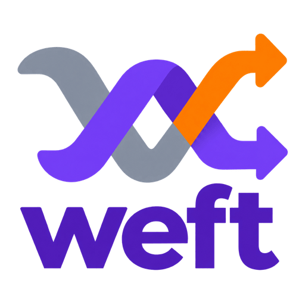

A durable graph of work — what you're blocked on, what's blocked on you, and how any of it connects — shared by humans and the agents working alongside them.
One append-only JSONL log, no daemon and no server. Tasks, issues and workstreams are nodes; claims, links and refs are events folded over the log, so history, audit and many concurrent writers come with the format.
git clone https://github.com/mparrett/weft
cd weft
make install # to ~/.local/bin; needs Go 1.25merge, blast radius, routes,
expired claims, retractions.
CLAUDE.md / AGENTS.md; weft help agent
prints the same